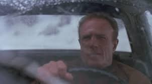

The Snow Storm
Paul Sheldon is a writer most famous for his Victorian romance novels featuring a character named Misery Chastain. On his way home from a lodge in Colorado after finshing his latest novel, he has a terrible accident in a snow storm.
In Annie Wilkes' Home
Luckily he is rescued by Annie Wilkes, his number one fan. At first she lovingly cares for him, thrilled and honored to have her favorite author in her home.
Stay with me...please!
As Paul's wounds heal and he recovers his strength, he becomes more anxious to leave. But Annie is now in love with him and she goes to drastic measures to keep him in her home and under her control.

The Operation Was Called Hobbling
The classic movie scene is not as gruesome as depicted in the novel the movie was based on, but it is still a shocker!